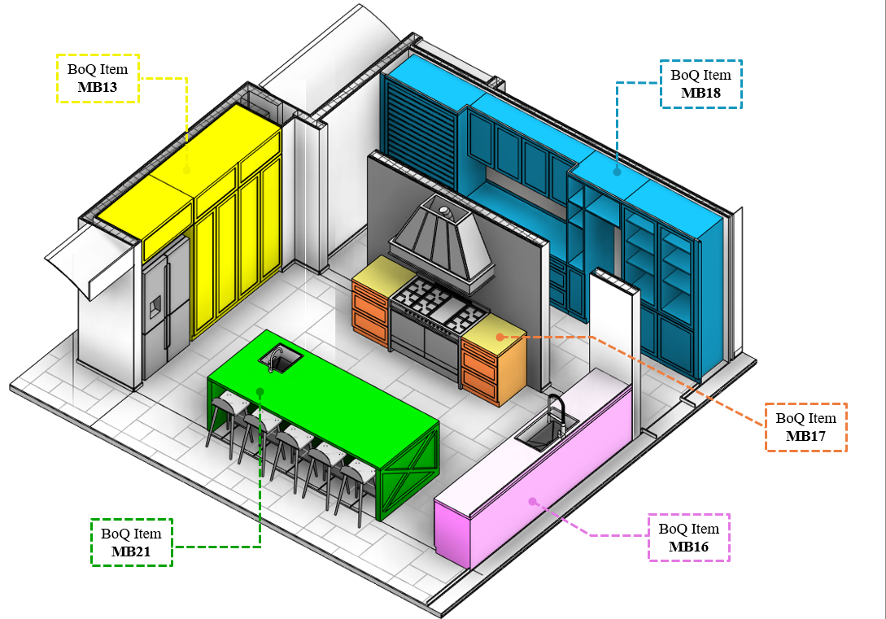
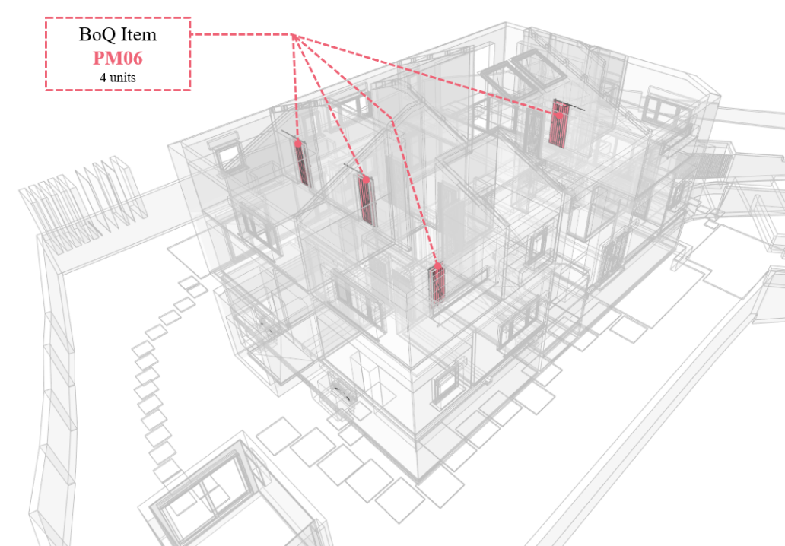

When quantifying carpentry, equipment, furniture, doors, and windows using BIM, it's crucial to assemble these elements exactly as they will be quantified, aligning with the specific requirements of the project.
The quantification is unitary; therefore, the modeled components should be grouped into a single element to form a distinct BoQ item.
(Note: Material takeoff is typically only employed by the subcontractor to price each item individually.)
 Figure 10 - Illustration of casework model assembly, where each colored casework assembly represents one BoQ item.
Dealing with repetitive elements like doors, windows, and plumbing fixtures demands a consistent approach. To ensure precise quantification of multiple instances of the same BoQ item, the code must remain the same.
 Figure 11 - Illustration of repetitive BoQ items with the same code, in this case the door PM06.
Critical Rule: If there are any variations among objects under the same code (such as differences in description or specification), the code must be modified to ensure precise cost estimation aligned with each element's specification.